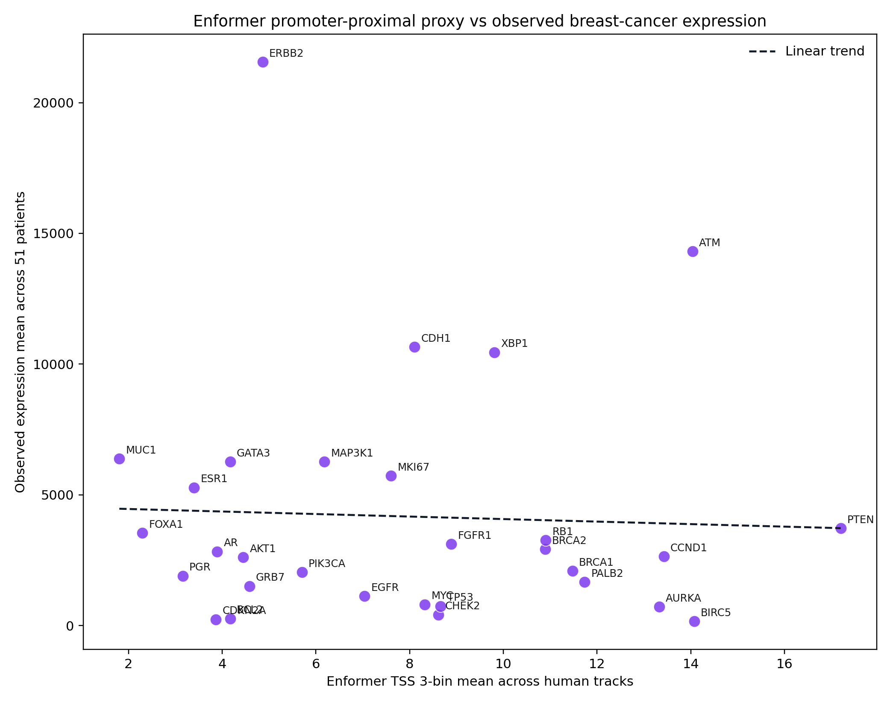
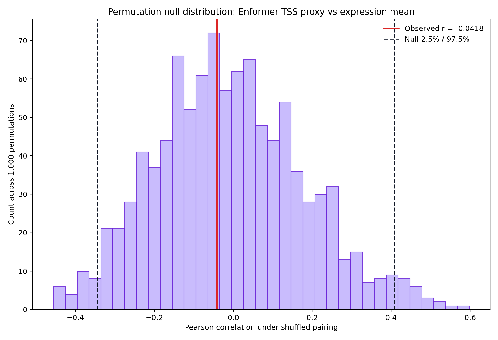

Testing DNA-derived signals against measured gene expression
I compared Enformer summaries with observed expression, then tested whether the relationship survived shuffled baselines.
Motivation & research question
A model can produce a detailed prediction without that prediction answering the biological question I care about. I investigated a concrete question: could summaries derived from DNA sequence track measured expression across a selected gene panel?
My focus was on testing that connection, rather than treating a successful model run as evidence of biological usefulness.
My process
The downloaded expression matrix contained 51 samples and 28,278 gene columns, while its label file listed 58 samples. I identified the mismatch and checked agreement for overlapping sample labels. I also checked target-gene availability and the HER2 / ERBB2 naming relationship.
From data checks to model comparison
- Selected a panel of 30 genes and retrieved reference sequences using Ensembl, accounting for transcription-start sites and strand orientation.
- Prepared DNA windows of 196,608 bases and ran
EleutherAI/enformer-previewon Modal. A saved successful run records an NVIDIA L40S and a human output head with 896 positions and 5,313 tracks. - Compared promoter-proximal summaries with mean observed expression across the cohort.
- Added a proximity-based enhancer baseline and a breast/mammary active-regulatory subset of 74 tracks, rather than averaging every output track together.
- Used Pearson and Spearman correlations and 1,000 permutations to assess whether the observed relationship differed from shuffled gene–expression pairings.

Findings & interpretation
| Expression proxy | Pearson r | Permutation p |
|---|---|---|
| Promoter, all tracks | −0.0418 | 0.8312 |
| Enhancer, all tracks | 0.2355 | 0.2158 |
| Enhancer, breast-active tracks | 0.3480 | 0.0639 |
The promoter-only baseline showed essentially no linear association. Enhancer-based summaries improved directionally, especially after selecting relevant tracks, but these selected tests did not cross a conventional p < 0.05 threshold. The track-filtered comparison also tested other summaries, so the strongest result is exploratory rather than an independently validated finding.

What I can conclude—and what I cannot
This baseline did not demonstrate that the chosen Enformer summaries predict cohort-mean expression. It does not establish that Enformer is generally ineffective. Reference-sequence regulatory predictions and patient expression measurements are different quantities; tissue context, preprocessing, and the chosen summary all affect the comparison.
The enhancer baseline used proximity-based regulatory annotations rather than a validated enhancer–gene interaction map. This was an exploratory cross-gene comparison, not a patient-level prediction model or a clinical evaluation.
Implications & reflection
The useful result was a clearer boundary around what this baseline could support. The promoter summary did not track measured expression, and the stronger enhancer result remained exploratory. I could narrow the next question to tissue context and regulatory summaries without claiming that the model had solved expression prediction.
A stronger follow-up would use a validated enhancer–gene interaction map and evaluate a chosen summary on independent data. Those steps are proposed next work, not completed validation.
Selected analysis code
This excerpt comes from the track-filtered comparison script. It holds the model summaries fixed, shuffles the expression values, and compares the observed correlation with the resulting null distribution.
View permutation-test excerpt
# Selected original analysis excerpt from build_track_filtered_enformer_comparison.py.
# Imports and constants included for context; no source patient data is included.
import numpy as np
import pandas as pd
N_PERMUTATIONS = 1000
RANDOM_SEED = 42
def permute(df: pd.DataFrame, metric: str) -> tuple[dict, pd.DataFrame]:
x = df[metric].to_numpy(dtype=float)
y = df['expression_mean'].to_numpy(dtype=float)
observed = float(np.corrcoef(x, y)[0, 1])
rng = np.random.default_rng(RANDOM_SEED)
rows = []
for i in range(N_PERMUTATIONS):
r = float(np.corrcoef(x, rng.permutation(y))[0, 1])
rows.append({'iteration': i + 1, 'metric': metric, 'pearson_r': r})
perm = pd.DataFrame(rows)
values = perm['pearson_r'].to_numpy(dtype=float)
return {
'metric': metric,
'observed_pearson_r': observed,
'n_permutations': N_PERMUTATIONS,
'null_mean': float(values.mean()),
'null_std': float(values.std(ddof=1)),
'null_q025': float(np.quantile(values, 0.025)),
'null_q975': float(np.quantile(values, 0.975)),
'two_sided_empirical_p_value': float((np.sum(np.abs(values) >= abs(observed)) + 1) / (len(values) + 1)),
'observed_percentile_in_null': float((values <= observed).mean() * 100.0),
}, perm
The excerpt is selected from the original analysis; imports and constants are included for context. It does not include patient-level source data or the surrounding infrastructure.